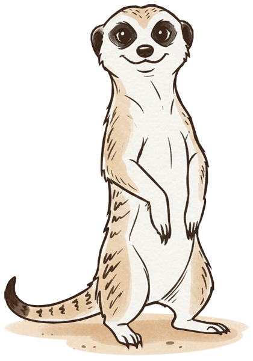

Bottom notifications
Trigger the different bottom variants and verify timing, stacking and actions.

Notifications keep you informed about
results, warnings and errors.
Trigger the different bottom variants and verify timing, stacking and actions.
Use the anchor button to verify placement, dismissal on scroll and timeout handling.